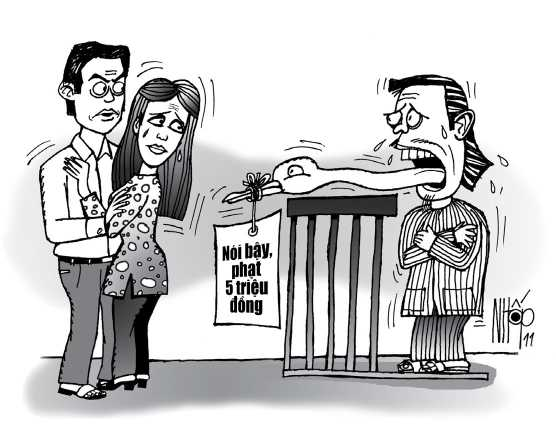

Ra trước phiên tòa dân sự phúc thẩm của Tòa án nhân dân tỉnh Cà Mau hôm ấy có nguyên đơn là chị LHN và bị đơn là anh VHP. Cả hai người cùng ngụ tại xã Thanh Tùng, huyện Đầm Dơi.
Trước đó, Tòa án nhân dân huyện Đầm Dơi đã xét xử sơ thẩm vụ kiện đòi bồi thường ngoài hợp đồng này, tuyên bố bị đơn P phải xin lỗi nguyên đơn N công khai trước nhân dân ấp và bồi thường thiệt hại về nhân phẩm, danh dự cho chị N năm triệu đồng. Anh P nộp đơn chống án, xin được xét xử phúc thẩm.
Trước tòa phúc thẩm, chị N trình bày: Chị biết anh P từ năm 1994 khi về làm dâu bên quê chồng. Mối quan hệ giữa chị và anh P đơn thuần chỉ là hàng xóm. Anh P nhỏ hơn chị hai tuổi nên gọi chị xưng là “chị”; gọi anh P là “chú em”.
Khoảng đầu tháng 6-1999, thừa dịp chồng chị đi vắng, P sang nhà chị chơi. Chị đang ru con ngủ thì anh P ngỏ lời ong bướm, rằng anh rất thương yêu chị rồi sau đó đòi... cho ngủ chung một tý. Chị quyết liệt chống đối, anh P bỏ ra về. Cứ như vậy, mỗi lần chồng chị đi làm ăn xa, anh P lại sang nhà chị ca bài ca con cá vàng lơ lửng cũ. Tất cả những chuyện xảy ra đều được chị thuật lại cho chồng biết.
Cho đến một ngày khoảng cuối tháng 9-1999, anh P lại đến nhà chị thực hiện kịch bản trên. Lần này, anh P dọa giết chị và hứa sẽ tung tin cho mọi người biết rằng chị đã có quan hệ tình dục với mình. Anh P dọa sẽ làm mất uy tín và gây ra mâu thuẫn trong quan hệ vợ chồng của chị nếu chị không đáp ứng yêu cầu cho anh ta “yêu đại một phát”!
Chị N tiếp tục cự tuyệt. Quả nhiên sau đó, trong những bữa nhậu với bạn bè, P khoe đã từng ngủ với chị N. Nguồn thông tin tai hại đó đồn rùm lên khắp ấp, khiến gia đình bên chồng chị N nghi ngờ chị.
Lời nói và việc làm của anh P đã xúc phạm danh dự, nhân phẩm của chị nên chị phải nộp đơn kiện anh P “dai như đỉa đói” này ra trước Tòa án nhân dân huyện Đầm Dơi. Tòa xử chị thắng kiện nhưng anh P kháng án, xin được xử phúc thẩm.

.Tại phiên tòa phúc thẩm, anh P trình bày: Chuyện chị N có ngoại tình với anh và quan hệ với anh là... có thật. Anh đã “mần ăn” được cả thảy ba lần. Anh khai ba lần quan hệ đó xảy ra ở ba thời điểm khác nhau và ba không gian khác nhau: Phía sau nhà mẹ chồng chị, góc hè bên phải nhà chị, nơi đặt mái chứa nước của nhà chị! Thời gian quan hệ là ban đêm, hai lần quan hệ diễn ra sau 21 giờ, một lần diễn ra lúc 23 giờ.
Việc xác nhận trên là nhằm chứng minh rằng chuyện quan hệ là có thật. Án sơ thẩm dân sự của Tòa án nhân dân huyện Đầm Dơi buộc anh đền bù danh dự, nhân phẩm cho chị N năm triệu đồng và phải công khai xin lỗi chị trước nhân dân ấp là oan ức.
Như cảm thấy chưa đủ sức thuyết phục tòa rằng mình nói thật, anh P còn khai thêm anh biết rõ vết nứt trên bụng chị N. Anh gọi đó là một “chứng cứ” chứng minh anh đã được “yêu”. Cho nên trong đơn chống án, anh không đồng ý bồi thường và xin lỗi.
Phiên xử sôi nổi hẳn lên khi Hội đồng xét xử thẩm vấn anh P. Trước hết, về ba địa điểm, tòa cho rằng anh P là hàng xóm, lại thường lui tới nhà chị N nên biết rất rõ đặc điểm cảnh quan xung quanh nhà. Việc anh mô tả gốc dừa ra sao, mái đựng nước thế nào là không cần thiết và cũng không có cơ sở để tin là anh đã từng quan hệ với chị tại các chỗ ấy.
Thứ hai, về vết nứt trên bụng chị N mà anh P cho là “chứng cứ” cũng bị tòa bác bỏ luôn. Bút ký phiên tòa ghi rõ: “Anh có thấy dấu vết riêng trên người chị N không?” Anh P: “Dạ, có thấy. Chị có vết nứt da ở bụng”. Tòa: “Anh khai quan hệ ban đêm, không có đèn lửa. Làm sao anh thấy được vết nứt đó? Bộ anh dám mở đèn sáng lên mà nhìn kỹ à?”. Anh P: “Thưa quý tòa, tôi rờ”. Tòa: “Rờ sao nói là thấy được? Anh có hiểu rằng một phụ nữ sau khi sanh con, da bụng có những vết nứt theo chiều ngang là chuyện bình thường không?”. Cái này thì anh P không biết. Anh cứng họng, cà lăm không trả lời được. Tòa bác bỏ cái gọi là “chứng cứ” do anh P đưa ra.
Về phần chị N, chị quyết liệt phản đối các lời khai của anh P. Chị khai những lần anh đến nhà ve vãn, chị đã báo cho gia đình chồng và chồng chị biết. Lần cuối cùng khi anh P đến hăm dọa, chị đã đến trình báo chính quyền xã và cũng được nhiều bà con hàng xóm biết.
Tòa biểu dương thái độ phản đối cương quyết của chị đối với hành vi sàm sỡ của anh P. Từ những phân tích trên, tòa xét thấy không có cơ sở chấp nhận đơn chống án của anh P. Tòa cho rằng hành vi khai báo bịa đặt của anh P đã làm cho gia đình, bà con lối xóm và cả chồng chị N nghi ngờ lòng chung thủy của chị. Ở chừng mực nào đó, cuộc sống vợ chồng cũng bị ảnh hưởng.
Để bù lại các tổn thất đó, tòa tuyên y án sơ thẩm, buộc anh P phải công khai xin lỗi chị N trước nhân dân ấp và bồi thường danh dự, nhân phẩm cho chị N năm triệu đồng. Kể từ ngày chị N có yêu cầu thi hành án, nếu anh P chậm thi hành còn phải chịu thêm phần lãi suất theo mức lãi nợ quá hạn.
Sau khi nghe tuyên án, những người tham dự phiên xử hôm ấy đứng dậy vỗ tay hoan hô hội đồng xét xử. Chị N chạy ra ôm lấy người chồng, khóc nức nở trong tay anh.